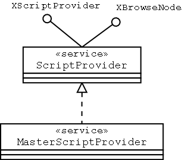
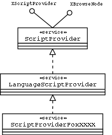
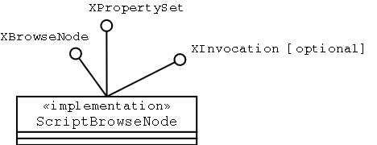
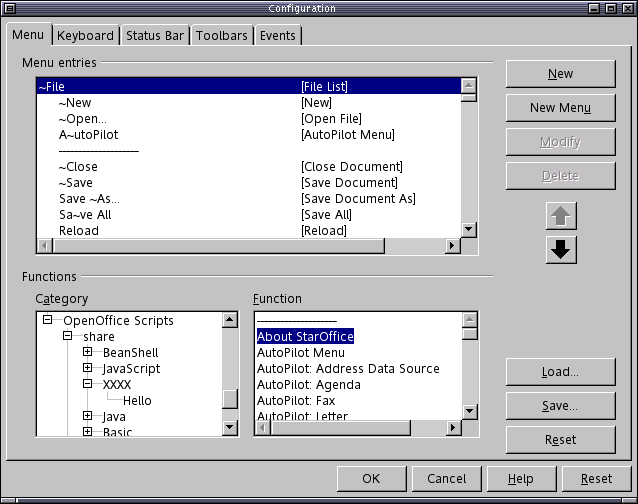
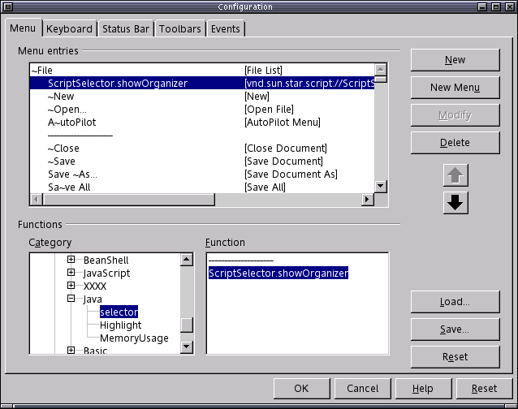
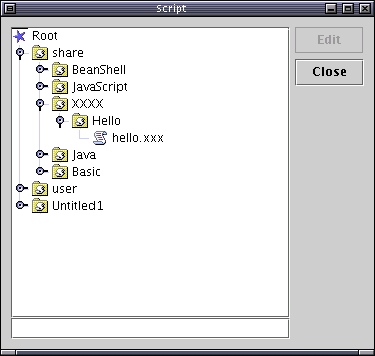

Scripting Framework Architecture
Revision: 0.1
Date:
Authors:
Noel Power
Project:
Scripting Framework
Table of Contents
Revision History 2
Introduction 2
UNO Language Bridge 2
Overview of Architecture 3
MasterScriptProvider 3
Responsibilites 3
Lifecycle 4
LanguageScriptProvider 4
Responsibilites 4
Scripting Framework URI 5
Storage of Scripts 5
How To implement a LanguageScriptProvider 5
Using framework helper classes ( Java Only ) 5
Using UNO. 6
Prerequisites 6
Creating the LanguageScriptProvider component 6
InvocationCtx 6
InvocationCtx Property Set 6
InvocationCtx String 6
LanguageScriptProvider expected behaviour 7
XBrowseNode method getName() 8
XBrowseNode method getChildNodes() 8
XBrowseNode method hasChildNodes() 8
XBrowseNode method getType() 9
Building a new LangaugeScriptProvider 9
Registering a new LanguageScriptProvider 10
Using the framework with Office 10
Appendix I 13
Interfaces 13
Appendix II 13
Skeleton Code 13
Appendix III 18
parcel-descriptor.xml DTD and example 18
Appendix IV 18
Directory Structure 18
Revision History
|
Revision |
Date |
Author |
Comment |
|---|---|---|---|
|
0.1 |
|
Noel Power |
Initial draft |
Introduction
By creating a new LanguageScriptProvider a developer can add support for the scripting language of their choice to OpenOffice.org. The Scripting Framework provides all the required plumbing needed to facilitate the detection, assigning and invocation of scripts for a LanguageScriptProvider. The LanguageScriptProvider just has to provide the language specific execution environment for the script and execute it. The framework takes care of the rest.
UNO Language Bridge
There must be a supported UNO bridge for the scripting language to allow the framework to make calls against this new scripting runtime. The bridge will take care of all the parameter marshalling that needs to occur as the framework makes the call to the invoke method written in the new language.
The Java and BeanShell Runtimes are supported by the existing Java UNO bridge. Any scripting language with a Java implementation could use the Java UNO bridge, such as Jython [Python], Jacl [Tcl/TK] andRhino [Javascript].
Overview of Architecture
MasterScriptProvider
Figure1 MasterScriptProvider ( name space ommited )
The MasterScriptProvider is an Office side UNO component which is an integral part of the framework. It implements a number of services and interfaces. See Figure 1. It is available and deployed as part of an Office installation .
Responsibilites
Identifes the available LangaugeScriptProviders. LanguageScriptProviders must adhere to a specific naming scheme . “drafts.com.sun.star.script.provider.ScriptProviderForXXX” where “XXX” is the language name as it appears in a script framework URI. Additionally the LanguageScriptProvider must implement the following service definition.
drafts::com::sun::star::script::provider::LanguageScriptProvider ( see Figure 2.)
Creates an invocation context from the document model. The invocation context is an implementation of com.sun.star.beans.XPropertySet setup to access the context from which the script was invoked. This invocation context is passed as an argument to any child language LanguageScriptProviders the MasterScriptProvider creates.
Supports drafts.com.sun.star.provider.XScriptProvider interface. Returns a drafts.com.sun.star.script.provider.XScript object for any script URI ( see Scripting Framework URI section ) passed to the getScript() method. The MasterScriptProvider will create instances ( or access previously created instances) of the appropriate LanguageScriptProviders for that URI.
Supports the drafts.com.sun.star.script.browe.XBrowseNode API ( see Appendix I ) so it provides a single point of contact for browsing and executing scripts by delegating to correct LanguageScriptProviders. When a client accesses the XBrowseNode API the MasterScriptProvider will create an instance ( or access a previously created instance ) of each LanguageScriptProvider. It will access the XBrowseNode API for each LanguageScriptProvider and collate the information available from each provider to present this information back to the caller.
Lifecycle
By default MasterScriptProvider is created by any document that is opened. Its lifecycle will be tied to the life of the document that created it.
The MasterScriptProvider can also be created standalone, in which case it will exist as long as a reference to it is held by the client that creates it.
The MasterScriptProvider is a lightweight object. It maintains some static state that will be available to all instances of the MasterScriptProvider ( such as list of currently open documents). The LanguageScriptProviders themselves are also intended to be lightweight objects. The MasterScriptProvider hides the details of the construction and access of the LanguageScriptProviders from clients and users.
LanguageScriptProvider
Figure 2. LanguageScriptProvider for language XXXX (namespace omitted)
The LanguageScriptProvider is an UNO component that provides the environment to execute a script for a specific language. For example when office encounters a scripting framework URI ( see Scripting Framework URI section ) in an event assignment it delegates to a MasterScriptProvider which in turn finds the appropriate LanguageScriptProvider to execute the script.
Responsibilites
Responsible for creating the environment necessary to run a script. Implementation specific.
It is intended that the LanguageScriptProvider service will maintain some static state that represents the registry of scripts known to it ( for the specific language of the provider ), including scripts in OFFICE_INSTALATION_PATH/user, OFFICE_INSTALATION_PATH/share and for each open document. Therefore this information is available to all instances of the LanguageScriptProvider.
Given a script URI it is responsible for returning a command like object that implements the drafts.com.sun.star.script.provider.XScript interface that can execute the script described by the URI.
Supports XBrowseNode API to allow enumeration for all scripts
The name of the new LanguageScriptProvider service must be of the form drafts.com.sun.star.script.provider.ScriptProviderFor[Language].
The new LanguageScriptProvider service must support the “drafts.com.sun.star.script.provider.LanguageScriptProvider” service.
Scripting Framework URI specification
vnd.sun.star.script://<script_name>['?'<query_element>('&'<query_element>)*]]
script_name is something meaningful that the ScriptProvider can use to determine what script to run.
|
Parameter |
Description |
|
language |
identifies identifies the language, or LanguageScriptProvider to be used to process the URI e.g. language=StarBasic, language=Java, language=JavaScript |
|
location |
identifies the container for the script, could be document, user, share e.g. A placeholder to allow relative addressing of the document, user and share areas, the current Scripting Framework URI scheme caters for this by allowing location to be “user”, “share” or “document” indicating the location of the script is located in “install_path/User/Scripts/<language>”, “install_path/Share/Scripts/<language>” or document identified by the invocation context. note: location could be another URI e.g. “file://” or “vnd.sun.star.pkg://”. Currently only user/share or document are supported by the framework.. |
MAY CHANGE, for the next milestone we are going to be using a new UNO URL service, format may slightly change as a result of conformance to general office URL formating conventions.
Storage of Scripts
A LanguageScriptProvider is responsible for knowing about how its own scripts are stored, where, what format and what kind of directory structure is used.
The scripting framework however attempts to standardise how to store and discover scripts by defining
a default directory structure [ see Appendix III]
a generic mechanism for enabling discovery of scripts and associating meta data with those scripts. [see Appendix IV ]
In addition the scripting framework provides a mechanism for packaging and deploying scripts that wish to use these framework defined structures ( see using commandline-tools)
Note: it is up to the developer to decide whether they use these features or not.
How To implement a LanguageScriptProvider
To implement a LanguageScriptProvider you need to create an UNO component. The component needs to satisfy certain criteria
implement service drafts.com.sun.star.script.provider.LanguageScriptProvider, therefore
implement interface drafts.com.sun.star.script.provider.XScriptProvider
implement interface drafts.com.sun.star.script.browse.XBrowseNode
satisfy naming convention "drafts.com.sun.star.script.provider.ScriptProviderFor[languageName]" e.g. "drafts.com.sun.star.script.provider.ScriptProviderForXXXX”
Using framework helper classes ( Java Only )
To bypass the complexity of UNO and to reduce the cost of developing an UNO component the Scripting Framework provides a helper class in the form of an abstract base class com.sun.star.script.framework.provider.ScriptProvider. This class can be found in the ScriptFramework.jar. This jar file will be available at runtime located in the “OFFICE_INSTALL_PATH/program/classes” directory.
To create an UNO service to support the scripting language you wish to create a LanguageScriptProvider for, you just
need to extend com.sun.star.script.framework.provider.ScriptProvider class.
implement the invoke method
provide implementations for __getServiceFactory() and __writeRegistryServiceInfo() methods. Please see skeleton code in APPENDIX II look for “INSERT CODE TO CALL MyScriptLanguage here”.
See section on building a new LanguageScriptProvider for details on the tools available for building you new implementation.
Using UNO.
Prerequisites
Have read and understood the following chapters in the Office Developer Guide.
http://api.openoffice.org/docs/DevelopersGuide/Preface/ReadersGuide.htm
http://api.openoffice.org/docs/DevelopersGuide/FirstSteps/FirstSteps.htm
http://api.openoffice.org/docs/DevelopersGuide/ProfUNO/ProfUNO.htm
http://api.openoffice.org/docs/DevelopersGuide/Components/Components.htm
Familiarity with building office components either manually or using OpenOffice SDK
Creating the LanguageScriptProvider component
Create UNO component drafts.com.sun.star.script.provider.ScriptProviderForXXXX according to the guidelines outlined in the prerequisites mentioned above.
In addition to the interfaces mentioned in the service description it is also necessary for the component to implement the com.sun.star.lang.XInitialization interface.
LanguageScriptProviders are created and initialised by the MasterScriptProvider with an Invocation context.
Invocation Context
The invocationCtx either an implementation of com.sun.star.beans.XPropertySet or an OUString setup by the MasterScriptProvider to pass context information to the LanguageScriptProvider. The context a LanguageScriptProvider is created with determines its behaviour in terms of both execution and what scripts it returns via the XBrowseNode API.
Invocation Context Property Set
|
Property Key |
Type |
Description |
|---|---|---|
|
DOC_REF |
XModel |
The XModel of the current document |
|
DOC_URI |
OUString |
The document URI of the current document |
Invocation Context String
Contains a url to a location on the file system that contains scripts e.g. OFFICE_INSTALL_PATH/user or OFFICE_INSTALL_PATH/share
LanguageScriptProvider expected behaviour
As mentioned above the new LanguageScriptProvider service will be instantiated by the MasterScriptProvider. It will be passed an invocation context ( invocationCtx described above ) as a parameter of the initialise() method .
Xinitialization Method initialize()
|
Parameter Types |
Parameters |
Description |
|---|---|---|
|
[in] sequence< any > |
aParams |
An invocation context. Contains either reference to the XModel ( representing a document context ) or location of user or share directory (representing and application context ). |
A LanguageScriptProvider should
be aware of any scripts located in the context it is created with.
be aware of any scripts located in any other context for which a LanguageScriptProvider of the same type has been created. This implies that the LanguageScriptProviders should cache this data statically so that it can be shared amongst the different instances.
be able to locate a script based on a scripting URI and return an object implementing the XScript interface.
XScriptProvider Method getScript()
|
Parameter Types |
Parameters |
Description |
|---|---|---|
|
[in] string |
URL |
URL to script. |
|
ReturnType |
Description |
|
XScript |
Instance of an object implementing the XScript interface that represents a script that will execute against the context of the LanguageScriptProvider that created it. This means that when the invoke() method of this object is called that script will act on the document from which the script was invoked. |
Note: It is up to the LanguageScriptProvider to decide what information to pass to a running script. It makes sense to pass information to the script which makes the script writer's job easier, such as a reference to the current document ( context ), reference to the service manager (available from the component context passed into the LanguageScriptProvider component's constructor by UNO) and a reference to the desktop (available from UNO using this service manager).
All of the Java based reference LanguagesScriptProviders provided with Office make this information available to the running script in the form of an object implementing the interface drafts.com.sun.script.provider.XScriptContext. This provides accessor methods to get the current document, the desktop and the component context. Depending on the contraints of the language this information is passed to the scripts in different ways, for example in Beanshell and JavaScript this is available as an environment variable and in the case of Java it is passed as a parameter to the script.
Xscript invoke() method.
|
Parameter Types |
Parameters |
Description |
|---|---|---|
|
[in] string |
scriptURI |
Original URI passed to the framework |
|
[in] sequence< any > |
aParams |
Input parameters |
|
[out] sequence< short > |
aOutParamIndex |
Output parameter index |
|
[out] sequence< any > |
aOutParam |
Output parameters |
|
ReturnType |
Description |
|---|---|
|
Any |
Return value of script. |
XScriptContext methods
|
XscriptContext Method |
Returns |
Description |
|---|---|---|
|
getDocument |
XModel |
Access to the current document. |
|
getDesktop |
XDesktop |
Access to the current desktop. |
|
getComponentContext |
XComponentContext |
Can be used by the script to get the default multi component factory to create other UNO services. |
The Browse interfaces ( XBrowseNode ) exported by the new LanguageScriptProvider service are the initial point of contact for the office application. In order for the Office process to display all scripts it first needs to create all available LanguageScriptProviders, each LanguageScriptProvider is created with a context (see above). Depending on how the new LanguageScriptProvider is initialised it will enumerate the scripts stored in that context. It is expected that the LanguageScriptProvider implementation will return the language name as the name of the top-level CONTAINER node. It is up to the LanguageScriptProvider how to arrange the hierarchy of the scripts and how they are presented to the user.
XBrowseNode method getName()
|
ReturnType |
Description |
|---|---|
|
string |
Name of Node. |
XBrowseNode method getChildNodes()
|
ReturnType |
Description |
|---|---|
|
Sequence <XBrowseNode> |
Children of this node. |
XBrowseNode method hasChildNodes()
|
ReturnType |
Description |
|---|---|
|
boolean |
True if children exist, false otherwise |
XBrowseNode method getType()
|
ReturnType |
Description |
|---|---|
|
short |
Constant defined in BrowseNodeTypes.idl indicating that node is
|
XBrowseNode implementations of type BrowseNodeTypes.SCRIPT is treated by OpenOffice.org as a special node see Figure 3. below.
Figure 3.
PropertySet 1. available from node of type SCRIPT ( BroswseNodeTypes.idl in Appendix I )
|
Key |
Value type |
|---|---|
|
URI |
string |
|
EDITABLE |
boolean |
In order for Office to be able to assign a script it needs to be able to retrieve the scripting framework URI that describes the script. When a XBrowseNode implementation of type SCRIPT is selected it needs to export the URI as a property named URI. Similarly it is possible to integrate an IDE that is capable of editing the script by exporting a property named Editable. The script XBrowseNode implementation object needs to also implement the com.sun.star.script.XInvocation interface. This allows the implementation object to receive a request to edit the script. It is up the implementation to call the IDE and pass it the information required for the IDE to be able to edit and invoke the script.
The prototype ScriptSelector GUI demonstrates this capability for the reference LanguageScriptProviders which are shipped with Office . See Figure 6.
Building a new LanguageScriptProvider
It is possible to build a new LanguageScriptProvider component using either the SDK or by integrating changes directly in to the scripting framework project and using OpenOffice build environment.
This section will only cover how to manually build a Java LanguageScriptProvider.
set up the classpath to contain the following jars located in the program/classes directory of your office installation ScriptFramework.jar,unoil.jar,juh.jar,jurt.jar,jut.jar,ridl.jar and additionally include path to xerces.jar.
compile the ScriptProviderForXXXX.java e.g. javac -d . ScriptProviderForXXXX.java
create a directory structure like mkdir -p buildDir/skip_registration
place classes needed by the provider at runtime in the skip_registration directory
create a Manifest file with the following entry “RegistrationClassName: com.sun.star.script.framework.provider.xxxx.ScriptProviderForXXXX”
make a jar containing the generated class files and the Manifest e.g. jar -cvmf Manifest buildDir/ScriptProviderForXXXX.jar com/
to create an uno package put the jar file in a zip file e.g. when located in the buildDir directory zip [OFFICE_INSTALLATION_PATH]/program/newProvider.zip -r .
Registering a new LanguageScriptProvider
Assuming the new LanguageScriptProvider is bundled in an uno package file called newProvider.zip
Exit Office ( on windows make sure that the QuickStarter is also shut down )
copy newProvider.zip into INSTALL_DIR/Program directory
From INSTALL_DIR/Program run the pkgchk command
./pkgchk newProvider.zip ( unix systems )
pkgchk.exe newProvider.zip ( windows systems )
Using the framework with Office
Scripts in Office are executed in two ways
Directly from an IDE.
As a result of some action that has an script assigned to it being performed. Example a menu item that is assigned to a script.
One of the main entry points to associate such actions with scripts is the Tools/Configure dialog ( shown in Figure 4.) To assign a script to a menu item
open Tools/Configure dialog
select the menu tab in the top portion of the dialog
expand the available scripts in the “Category” panel located in the bottom left panel of the dialog.
Select where the new menu item will be located ( in the example shown in Figure 4. this will be under the File menu )
Select the available script from the “Function” panel, click “New” button to create a new script.
Click “OK” to confirm the new configuration.
To invoke script select “File” in the drop down list, you should find the new menu item. Clicking on the new menu item should start the script.
Figure 4.
For detailed help please use the help provided by the clicking the“Help” button. The help text provided only considers Basic but should be sufficient to explain the functionality. There is a User Guide available for the Scripting Framework here. It is also possible to assign scripts to Dialogs, embedded Objects charts etc. These won't be covered in this document.
Additionally a number of scripts written in Beanshell, JavaScript and Java are provided as examples. These are all located under the share node contained by the “OpenOffice,org Scripts” root node. One of these scripts allows the user select a script and then edit that script in an appropriate IDE. To enable this dialog follow the instructions given above to create a menu assignment for the ScriptSelector.showOrganiser script see Figure 5.

Figure 5
Selecting File->ScriptSelector.showOrganiser should display the script selector ( Figure 6. )
To open the script in the IDE simply navigate to the script, if the script is editable and an IDE is available then the “Edit” button should be enabled.

Figure 6. Showing new language XXXX integrated with the scripting framework.
Appendix I
Interfaces
[ *** Links to the IDL or IDL doc for all of the scripting interfaces ]
Appendix II
Skeleton Code
package com.sun.star.script.framework.provider.xxxx;
import com.sun.star.script.framework.provider.*;
import java.util.*;
import java.io.*;
import com.sun.star.uno.XComponentContext;
import com.sun.star.lang.XMultiComponentFactory;
import com.sun.star.lang.XInitialization;
import com.sun.star.lang.XTypeProvider;
import com.sun.star.lang.XServiceInfo;
import com.sun.star.lang.*;
import com.sun.star.registry.*;
import com.sun.star.frame.XModel;
import com.sun.star.util.XMacroExpander;
import com.sun.star.uno.UnoRuntime;
import com.sun.star.uno.AnyConverter;
import com.sun.star.uno.Type;
import com.sun.star.uno.Any;
import com.sun.star.lib.uno.helper.*;
import com.sun.star.comp.loader.*;
import com.sun.star.beans.XPropertySet;
import com.sun.star.lang.IllegalArgumentException;
import com.sun.star.lang.WrappedTargetException;
import com.sun.star.reflection.InvocationTargetException;
import com.sun.star.script.CannotConvertException;
import drafts.com.sun.star.script.provider.XScriptContext;
import drafts.com.sun.star.script.framework.storage.XScriptInfo;
import drafts.com.sun.star.script.provider.XScriptProvider;
import drafts.com.sun.star.script.provider.XScript;
import drafts.com.sun.star.script.browse.XBrowseNode;
import drafts.com.sun.star.script.browse.BrowseNodeTypes;
import com.sun.star.script.framework.log.LogUtils;
import com.sun.star.script.framework.browse.DirBrowseNode;
import com.sun.star.script.framework.browse.DocBrowseNode;
import com.sun.star.script.framework.browse.XMLParserFactory;
import java.net.*;
public class ScriptProviderForXXXX
{
static private final String[] __serviceNames = {
"drafts.com.sun.star.script.provider.ScriptProviderForXXXX",
"drafts.com.sun.star.script.provider.LanguageScriptProvider" };
public static class _ScriptProviderForXXXX extends ScriptProvider
{
public _ScriptProviderForXXXX(XComponentContext ctx)
{
super(ctx, "XXXX");
}
/**
* The invoke method of the ScriptProviderForXXXX runs the
* XXXX script specified in the URI
*
*
* @param scriptName The scriptName is the language specific
* name of the script
*
* @param invocationCtx The invocation context contains the
* documentStorageID and document reference
* for use in script name resolving
*
* @param aParams All parameters; pure, out params are
* undefined in sequence, i.e., the value
* has to be ignored by the callee
*
* @param aOutParamIndex Out indices
*
* @param aOutParam Out parameters
*
* @returns The value returned from the function
* being invoked
*
* @throws IllegalArgumentException If there is no matching script name
*
* @throws CannotConvertException If args do not match or cannot
* be converted the those of the
* invokee
*
* @throws InvocationTargetException If the running script throws
* an exception this information
* is captured and rethrown as
* this exception type.
*/
private Object invoke( /*IN*/String scriptURI,
/*IN*/Object invocationCtx,
/*IN*/Object[] params,
/*OUT*/short[][] aOutParamIndex,
/*OUT*/Object[][] aOutParam )
throws IllegalArgumentException, InvocationTargetException,
CannotConvertException
{
// Initialise the out paramters - not used at the moment
aOutParamIndex[0] = new short[0];
aOutParam[0] = new Object[0];
XPropertySet languageProps = m_xScriptInfo.getLanguageProperties();
String cp = null;
// Set up ClassLoader based on property defined with script
try {
cp = (String)languageProps.getPropertyValue(CLASSPATH);
}
catch (Exception e) {
}
if (cp == null) {
cp = "";
}
String parcelURI = m_xScriptInfo.getParcelURI();
if (!parcelURI.endsWith("/")) {
parcelURI += "/";
}
Vector classpath;
try {
classpath = PathUtils.buildClasspath(parcelURI, cp);
}
catch (MalformedURLException mue) {
throw new InvocationTargetException(mue.getMessage());
}
ClassLoader cl = null;
try {
cl = ClassLoaderFactory.getClassLoader(m_xContext,
this.getClass().getClassLoader(), classpath);
}
catch (Exception e)
{
throw new InvocationTargetException(e.getMessage());
}
try {
String script = parcelURI + m_xScriptInfo.getFunctionName();
InputStream is;
Object result = null;
try {
is = PathUtils.getScriptFileStream( script, m_xContext );
}
catch (IOException ioe) {
throw new InvocationTargetException(ioe.getMessage());
}
if (is == null) {
throw new InvocationTargetException("Could not load script");
}
try {
//****
//* INSERT CODE TO CALL MyScriptingLanguage here
//* variables you can use
//* is = stream to script
//* cl = a classLoader that is setup with the classpath requirements
//* specified in the parcel-descriptor.xml
//* parcelURI path to location of parcel directory that contains the
//* script(s)
//*
//****
}
catch (Exception e) {
e.printStackTrace();
throw new InvocationTargetException(e.getMessage());
}
finally {
try {is.close();} catch (IOException ignored) {}
}
return result;
}
catch (Exception ex) {
ex.printStackTrace();
throw new InvocationTargetException(ex.getMessage());
}
}
public Object invoke( /*IN*/Object[] aParams,
/*OUT*/short[][] aOutParamIndex,
/*OUT*/Object[][] aOutParam )
throws IllegalArgumentException, CannotConvertException,
InvocationTargetException
{
return invoke(m_scriptURI, m_xInvocationContext, aParams,
aOutParamIndex, aOutParam);
}
}
/**
* Returns a factory for creating the service.
* This method is called by the JavaLoader
*
*
* @param implName the name of the implementation for which a service is desired
* @param multiFactory the service manager to be used if needed
* @param regKey the registryKey
* @return returns a XSingleServiceFactory for creating
* the component
* @see com.sun.star.comp.loader.JavaLoader
*/
public static XSingleServiceFactory __getServiceFactory( String implName,
XMultiServiceFactory multiFactory,
XRegistryKey regKey )
{
XSingleServiceFactory xSingleServiceFactory = null;
if ( implName.equals( ScriptProviderForXXXX._ScriptProviderForXXXX.class.getName() ) )
{
xSingleServiceFactory = FactoryHelper.getServiceFactory(
ScriptProviderForXXXX._ScriptProviderForXXXX.class,
"drafts.com.sun.star.script.provider.ScriptProviderForXXXX",
multiFactory,
regKey );
}
return xSingleServiceFactory;
}
/**
* Writes the service information into the given registry key.
* This method is called by the JavaLoader
*
*
* @param regKey the registryKey
* @return returns true if the operation succeeded
* @see com.sun.star.comp.loader.JavaLoader
*/
public static boolean __writeRegistryServiceInfo( XRegistryKey regKey )
{
String impl = "com.sun.star.script.framework.provider.xxxx." +
"ScriptProviderForXXXX$_ScriptProviderForXXXX";
String service = "drafts.com.sun.star.script.provider." +
"ScriptProviderForXXXX";
if (Factory.writeRegistryServiceInfo(impl, __serviceNames, regKey) ) {
return true;
}
return false;
}
}
Appendix III
parcel-descriptor.xml DTD and example
Appendix IV
Directory Structure
At the top level in the uncompressed format of a document, OFFICE_INSTALL_PATH/user or OFFICE_INSTALL_PATH/share there exists a “Scripts” directory with the following structure below it.
Scripts/
|
+- java/
|
+- otherLanguage/
under the language specific directory
+- a_language_name/
|
+- "user named deployment directory"/
|
+- bin/
|
+- src/
|
+- data/
|
+- resource/
directly underneath the "user named deployment directory" is where the parcel-descriptor.xml file is located.
Note: WILL CHANGE Similar to above, the file structure above is expected for storage of scripts that use the framework helper classes. At the moment we are discussing ways to consolidate UNO packages so that scripts will also be supported. It will then be possible to deploy scripts as within such packages. This of course means that the storage